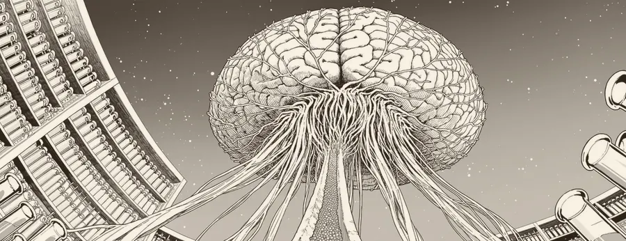
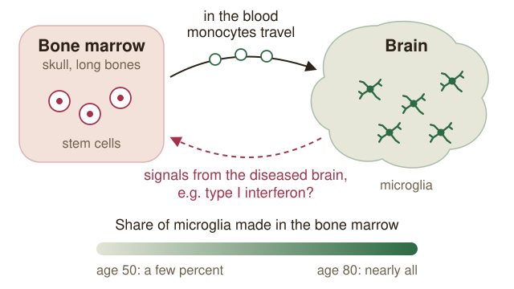

Bone marrow, blood and the ageing brain
Haematopoietic stem cells and the origins of dementia
Laboratory of Pharmacology, Graduate School of Pharmaceutical Sciences. Supervisor: Assoc. Prof. Nariko Arimura
In the host lab
What first sets dementia in motion is still unknown. Assoc. Prof. Arimura’s laboratory looks for part of the answer in the blood: in haematopoietic (blood-forming) stem cells, the cells they make and the molecules those cells release. By their forties, almost everyone with Down syndrome has the brain changes of Alzheimer’s disease. The lab found that normal mice given bone marrow from a Down syndrome model develop cognitive decline, even though their brains are genetically normal. The team has isolated plasma metabolites and exosomes that change in these mice and is now asking which of them reach the brain. It is also studying how young bone marrow changes the ageing brain.
My placement
I joined the laboratory in September 2026 as a part-time undergraduate research assistant.

Current thinking
In July 2026, two studies of human brain tissue reported that from around age 50, microglia are gradually replaced by cells made in the bone marrow, and that by about 80 almost all of them are (Alzforum, Aug 2026). Florent Ginhoux called the blood system “a previously underappreciated contributor” to microglial biology. If that holds, the quality of what the marrow produces matters for the ageing brain. Whether the newcomers help or harm is open. In one study, people whose brains carried marrow-derived clones had about half the odds of Alzheimer’s disease; in the other, the marrow-derived microglia were more inflammatory.
In September, Michal Schwartz’s group showed that in amyloid mice, chronic type I interferon disrupts monocyte production in the marrow, and that blocking it restored the supply and protected neurons (Alzforum, Sep 2026). Together with the Arimura lab’s Down syndrome result, this looks to me like a loop: the diseased brain may reshape the marrow, and the marrow may in turn act on the brain. Nathan Zemke, who led one of the human studies, calls the idea that marrow-derived cells shape the disease “an emerging concept rather than an established paradigm”, and most of the evidence for the loop still comes from mice. That is the part I want to help test.

Sources
Host-lab funding and selected publications
Host-lab funding (PI: Assoc. Prof. Arimura): JSPS KAKENHI Scientific Research (B) 24K01943, 2024–2027, Unraveling the foundation of dementia development through hematopoietic stem cells; AMED Brain/MINDS 2.0 5S-02, FY2024–2026, Analysis of plasma components that cause dementia and development of transplantation therapy.
Selected lab publications: Nakazawa S, … Arimura N. Nihon Yakurigaku Zasshi 2025 (review: blood cells and plasma components in dementia) [DOI]; Dewa K, Arimura N, … Hoshino M. Nat Commun 2024 (neuronal DSCAM and astrocytic GLAST in synapse formation) [DOI].